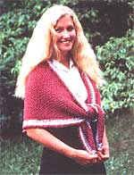
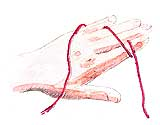
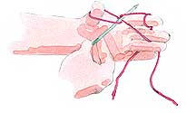
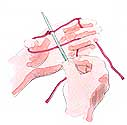
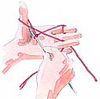
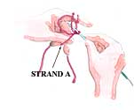
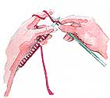
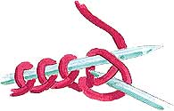
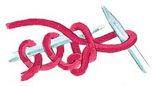

Europeans have used a fast, efficient knitting technique for generations. Here's how it works.
The first time I saw someone knitting the continental way, I was utterly astounded. What was that woman doing? And how ?
I learned the answers to these questions only recently, thanks to a kind neighbor who learned to knit as a schoolchild in Switzerland. "All our children are taught this method," she told me, her needles clicking and flashing rhythmically. As I watched row after row of beautiful work cascade from her fingers, I wondered why on earth our children aren't taught the European method, too.
EFFICIENCY'S THE KEY
Continental-style knitting (CSK) is faster than the American style (ASK) because it's more efficient. In CSK, the yarn is held in the left hand, and the right needle simply scoops the yarn through the left needle stitch to make a new stitch. In ASK, as you may know, the yarn is held in the right hand and is then passed around the point of the right needle after it's been inserted through the left needle stitch. For the ASK novice, this means that every time the yarn needs to pass around the needle point, the needle itself must be dropped, the yarn wrapped around, and the needle picked up again.
Of course, as an ASK knitter gets more proficient, he or she learns to hold onto the needle with the fingertips of the left hand while the yarn is being wrapped ...or, in another technique, with the tips of the right thumb and two middle fingers while the right forefinger flips forward like a shuttle to throw the yarn around the point of the needle. However, for the majority of knitters, CSK will still be faster ...simply because it's easier to scoop a piece of yarn through a stitch than it is to pass that yarn around the point of a needle.
In CSK the knitting is somewhat looser; consequently, the knitter will tend to be more relaxed (but not at the beginning, when trying to learn the skill!). The final product, however, is virtually indistinguishable from the ASK version.
Another facet of CSK's efficiency is that the yarn stays on the left hand, even when an empty needle is exchanged for a full one. In ASK, the yarn is usually dropped as the needles are exchanged, and is picked up again when the new row is started. The amount of time involved is small, but it adds up in the course of a large project.
It would be easier to understand the following directions if you had needles and yarn in hand; and because there's a good bit of movement in the right needle as you scoop the yarn, I'd suggest you use short, moderate-size needles such as 8" or 10" No. 9's.
BEGIN AT THE BEGINNING
Start by casting on 20 to 30 stitches. There are several ways to cast on; I'll describe the thumb-and-finger method, also called double cast-on.
Allowing 1" of yarn per stitch, draw off a yarn "tail." Let it dangle for a moment while you wrap the next section of yarn around your hand as shown (Fig. 1). Bring the yarn up from the skein between the ring and pinkie fingers of the left hand. Lay it across the back of your hand and, going around the outside of the finger first, wrap it once around your left forefinger. Now wrap the yarn clockwise around your thumb, once, and bring the end over to be pinched between the middle and ring fingers. With the yarn in place, and your left palm facing you, insert the point of the knitting needle up through the thumb loop. Reach across the yarn segment to scoop, from above, the yarn that comes from the forefinger to the thumb (Fig. 2). Bring that yarn all the way back through the thumb loop and pull the thumb loop off. You should now have a slipknot on the needle. Tighten it gently. Now simply hook the yarn with the back of your thumb, as shown in Fig. 3, and spread the thumb and forefinger so that the needle and its one stitch hang in between. Pull the needle back-without losing the stitch!-to where its yarn crosses above the strand going from thumb to ring finger (Fig. 4). Reach down and scoop up that strand at the thumb. Swing your needle to the right and over the strand going from the forefinger to the needle. Pick it up and scoop it back through the thumb loop. Slide the thumb loop off, then hook your thumb behind strand A (Fig. 5) and pull your thumb back to tighten the stitch. Continue in this way until you have the desired number of stitches on vour needle.
KNITTING THE CONTINENTAL WAY
Hold the needle full of cast-on stitches in your right hand. Catch the yarn between the ring and pinkie fingers of your left hand and wrap the yarn around the back of your hand and forefinger as you did when casting on. Now grasp the full needle with the tips of the two middle fingers and thumb of your left hand. There should be about 2" of yarn stretched between your forefinger and the needle.
Pick up the empty needle in your right hand and insert it in the first loop from left to right, front to back (Fig. 6). Go under the yarn coming from your left forefinger, scoop it up with the point of your right needle (Fig. 7), and pull the yarn back through the stitch (Fig. 8). Now slip the old stitch off the left needle. You're done! (Well, done with one stitch, anyway.) All you need to do is repeat this procedure with every stitch on the left needle.
When you reach the end of the row, don't drop the yarn from your left hand: Merely exchange the full right needle for the nowempty left needle, and continue knitting as before. A number of experts advise slipping the first stitch from the left needle onto the right rather than knitting it off: This supposedly keeps the outside edge firm and prevents it from curling. I've found, however, that this technique doesn't work well with all patterns, and I prefer to knit the first stitch in many projects, such as the diagonal garter-stitch square.
TROUBLES
In the beginning, I had a hard time scooping the yarn through the stitch. It kept getting away from me ...as did the needles every now and again. The problem lay in the tension: I was used to knitting ASK-fashion, fairly close to the needle, and there just wasn't room in my stitches to scoop yarn through. If this happens to you, relax and jiggle the needles and yarn a bit to loosen things up.
The second problem I had-and one that I admit I'm still working on-was in feeding the yarn from the skein to the needles. I find that my palms sometimes get damp when I'm knitting, which makes it difficult to work smoothly. To avoid the problem, I feed the yarn over the back of my hand, as described earlier, rather than across my palm. In this position, my pinkie sometimes has trouble regulating the flow of yarn, with the result that after three or four stitches, my left forefinger is pulled up against the left needle. Practice has improved this situation greatly-and my teacher has no difficulty whatsoever-so if you have the same problem, continue practicing, or else switch the yarn to cross your palm ...whatever works best for you.
PURLING
If anything, purling is easier than knitting in the continental style. To purl, slip the yarn in front of the left needle, then insert the right needle behind the yarn and into the stitch from right to left (Fig. 9). Use the left forefinger to drag the yarn down between the two needles. With the tip of the right needle, scoop the yarn back through the stitch, and pull the old stitch off (Fig. 10). That's it.
One knitting expert warns that the yarn must be wrapped around the needle as directed, that is, over the needle and down behind it. Wrong-way wrapping leads to wrong-way stitches, which will be aggravating to deal with when you reach the next row.
INCREASING AND DECREASING
I was taught to increase by knitting one stitch and then, before pulling it off, knitting through the back of the same stitch, this time completing the move and pulling off the old one. Another method, sometimes called M 1 or invisible increasing, is to pick up the strand of yarn between two stitches, drape it over the left needle, and knit it through the back. You'll find that the yarn should be draped with the front portion on the righthand side; otherwise, the maneuver won't work properly.
Decreasing is done the same way as it is in ASK: Knit (or purl) two stitches together.
DO IT YOUR WAY
Knitting, like any other skill, demands that you make some individual adjustments according to what you can do comfortably ...and it requires practice. Whether you knit American style, continental style ...or Italian style, which is simply ASK with the right needle tucked in your right armpit (this works very well!) ...you have to pick up yarn and needles and do it before you can do it better. I still have a long way to go before I can consider myself proficient, but I'm improving. And believe me, if I can do it ...you can too!
|
 |
 |
 |
|
 |
 |
 |
|
|
 |
 |
|
|
 |
|